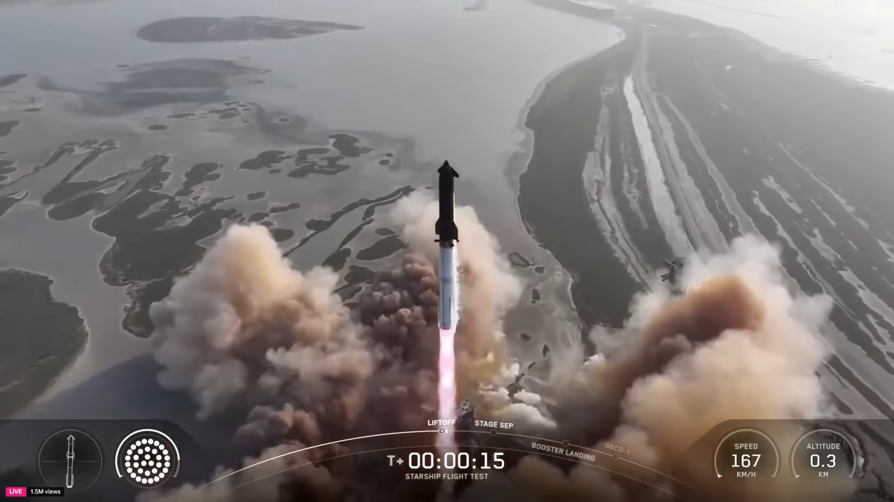

ក្រុមហ៊ុន SpaceX បានធ្វើការបាញ់បង្ហោះសាកល្បងរ៉ុក្កែត Starship ជាលើកទី 9 នៅមុននេះបន្តិច
ថ្ងៃចេញផ្សាយ៖ 28/07/2025

ប្រិយមិត្តដឹងមកហើយថាក្រុមហ៊ុន SpaceX របស់លោក Elon Musk បានធ្វើការអភិវឌ្ឍតនៅររ៉ុក្កែតជំនាន់ថ្មីឈ្មោះ Starship ដែលមានសម្ថភាពខ្លាំង និងផ្ទុកទំងន់បានច្រើនទៅកាន់អវកាស ហើយវាក៏កំពុងស្ថិតក្នុងការសាកល្បងផងដែរ។ អ្វីដែលពិសេសនោះវាជារ៉ុក្កែតប្រភេទដែលអាចប្រើប្រាស់ឡើងវិញទាំង Booster និង Starship ដោយការទំលាក់ខ្លួនចុះ មកពីបរិយាកាសផែនដី និងចាប់ដោយចង្កិះ ឈ្មោះថា Mega Zela។ ដោយកន្លងមកមានការបាញ់សាកល្បង 8 ដងរួចមកហើយ នៅការបាញ់សាកល្បងលើកទី 9 នេះក្រុមហ៊ុនបានធ្វើការបាញ់បង្ហោះ Starship ជាមួយនឹង Booster ដែលមានឈ្មោះថា Booster 14 ដែលធ្លាក់ប្រើម្ដងរួចមកហើយ នៅការសាកល្បងលើកទី7។
តោះមកដឹង ពីការបាញ់បង្ហោះសាកល្បងលើទី9នេះ តើដំណើរការទៅយ៉ាងមេចខ្លះ
- ជោគជ័យលើការប្រើប្រាស់ឡើងវិញនៃ Booster 14 ដែលធ្លាប់ប្រើកាលពីដំបូងនៃការបាញ់សាកល្បងលើទី7 ដោយរួញតួរខ្លួន Starship ឡើងផុតបរិយាកាសផែនដី ប៉ុន្តែបន្ទាប់ពីផ្ដាច់ខ្លួនពី Starship ចុះមកវិញ Booster ត្រូវបានផ្ទុះឆេះ កំណាក់កាល landing burn។
- យាន Starship ជោគជ័យឡើងផុតបរិយាកាសផែនដី និងពន្លត់ម៉ាស៊ីន Raptor របស់ខ្លួន ហើយត្រៀមខ្លួនចុះមកផែនដីវិញ
- Deploy Starlink simulation ទទួលបានបរាជ័យ ដោយទ្វារសំរាប់បើកដាក់ចេញ ផ្កាយរណប Starlink មិនដំណើរ ប្រហែលមកពីការកំណត់ System មិនអោយដំណើរប្រសិនបើ Ship ដំណើរការមិនប្រកក្រដី ព្រោះពេលនោះ Starship កំពុងមានបញ្ហា។
- នៅដំណាក់ទំលាក់ខ្លួន ចុះមកបរិយាយកាសផែនដីវិញ យាន Starship បាត់បង់ម្ចាស់ការលើខ្លួនឯង ដោយធ្វើអោយយានវិលមិនអាចគ្រប់គ្រងបាន នឹងផ្ទុះឆេះនៅលើបរិយាកាសផែនដី ទីតាំងលើមហាសមុទ្រឥណ្ឌា មូលហេតុបឋមមកពីការលិចធ្លាយឧស្ម័ន ដែលធ្វើអោយម៉ូទ័រគ្រប់គ្រងចលនា Thruster មិនដំណើរការ។
ទោះបីជាការផ្ទះឆេះទាំង Booster និងយាន Starship នេះក៏ដោយក៏ក្រុមហ៊ុន SpaceX ចាត់ទុកថានេះក៏ជាជោគជ័យមួយជំហ៊ានទៀតដែរ។ហើយនិងបាញ់សាកល្បងតេស្ដបន្ថែមទៀតនៅរយៈពេល 3 ទៅ4 សប្ភាហ៏ខាងមុខទៀតនេះ។ យើងរង់ចាំមើលថា តើនិងមានអ្វីថ្មីបន្ថែមទៀត នៅការបាញ់សាកល្បងលើកក្រោយទៀត។